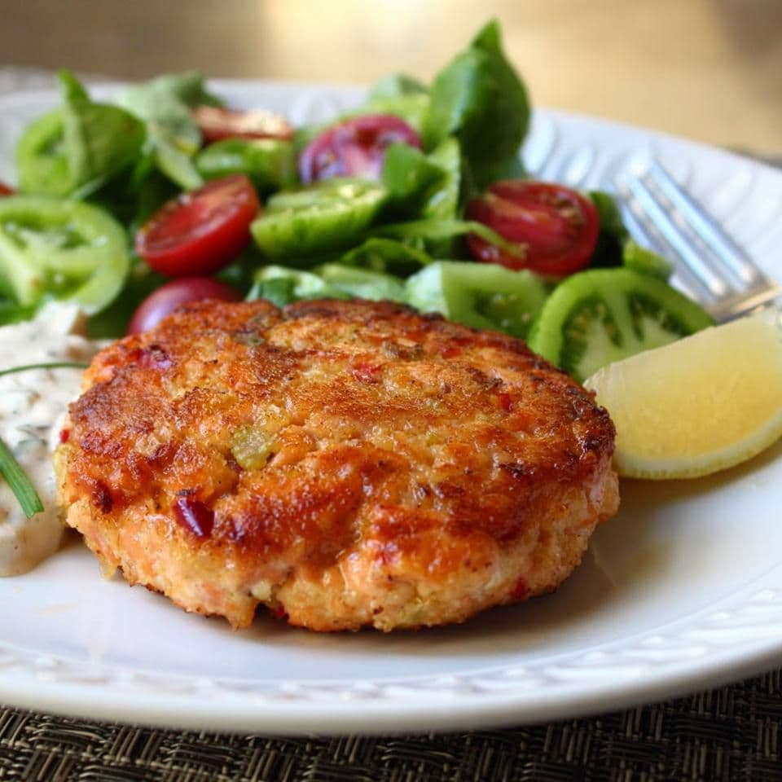

Fresh Salmon Cakes

Description
Salmon cakes made with sautéed vegetables and fresh salmon.
Served with lemon and tomato slices accompanied with a remoulade sauce.
Ingredients
- 1 tablespoon extra-virgin olive oil
- ¼ cup minced onion
- 2 tablespoons minced red bell pepper
- 2 tablespoons minced celery
- salt and pepper to taste
- 1 tablespoon capers
- 1 ¼ pounds fresh wild salmon, coarsely chopped
- ¼ cup mayonnaise
- ¼ cup panko bread crumbs
- 2 cloves garlic, minced
- 1 teaspoon Dijon mustard
- 1 pinch cayenne pepper
- 1 pinch seafood seasoning (such as Old Bay®)
- 1 tablespoon panko bread crumbs, or to taste
- 2 tablespoons olive oil, or as needed
Steps
- Heat extra virgin olive oil in a skillet over medium heat. Cook and stir onion, red
pepper, celery,
and a pinch of salt in hot oil until onion is soft and translucent,
about 5 minutes. Add capers; cook and stir until fragrant, about 2 minutes.
Remove from heat and cool to room temperature.
- Stir salmon, onion mixture, mayonnaise, 1/4 cup bread crumbs, garlic, mustard,
cayenne, seafood seasoning, salt, and ground black pepper together in a bowl until
well-mixed. Cover the bowl with plastic wrap and refrigerate until firmed
and chilled, 1 to 2 hours.
- Form salmon mixture into four 1-inch thick patties; sprinkle remaining
panko bread crumbs over each patty.
- Heat olive oil in a skillet over medium-heat. Cook patties in hot oil until golden
and cooked through, 3 to 4 minutes per side.